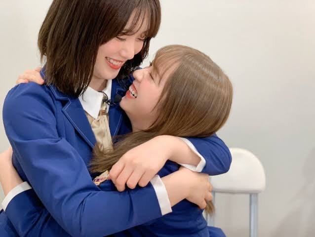

2021/0516Sunだいすきなみなさんへ
私、伊藤純奈は
乃木坂46を卒業します。
14歳で乃木坂に入って
今は22歳。
8年間とてもとてもお世話になりました。
何もできない、何もわからない状態から
スタートしてたくさん自分のことを
知れた気がします。
周りの仲間たちが卒業をしていく中で
自分もこの先のことを考えるようになりました。
卒業について考える時間が増えて、悩んで、
やっぱりいまの自分はもう乃木坂にいるのではなく
知らない道に進んでいくべきだと思い、
卒業を決めました。
まさか自分がアイドルになるなんて
思ってもなかったし、たくさんの
素敵な経験をさせてもらえて大好きで
大切な仲間に出会えて、そしてなにより
こんなにたくさんの方々に応援してもらえる
なんて想像も出来なかった未来でした！
本当に幸せです。幸せ者です。
8年間。
色んな事がありました。青春は
全て乃木坂に捧げました！
乃木坂が大好きだったからここまで
続けられたのだと思います。
こんなに乃木坂をだいすきだと思えるのは
スタッフさん、メンバー、応援して下さってる
みなさんのおかげだと思います。
本当に乃木坂は素敵です！
胸を張って言えます！
なんでこんなに愛おしいんだろうと
思えるくらい、大切な存在です。
だからこそ
外からのみんなも見てみたいと思いました☺︎
そして、
同時に発表したみりあ。
2期生としてずっと一緒に活動してきて
楽しい思い出にも辛かった思い出にも
本当にたくさんの思い出の中に
みりあの存在がいます。
今回も一緒に卒業発表、じゅんは
心強かったよ〜。ありがとう。

5月26日に配信で行われる
アンダーライブがみりあと私にとって
最後のライブになります！
直接みなさんの前でライブをする事が
できずに悔しい気持ちもありますが
全て出し切りたいと思います！
私を推してくれているみなさんは
推していてよかった〜〜！って
思ってくれてるかなあ
悲しい思い、悔しい思いばかりさせて
本当に申し訳なかったなあと今でも
すごく思います。
それでも応援し続けてくれていた
みなさん、本当に本当に心の支えになりました。
ありがとうございます！
活動期間は
8月末までの予定です。
6月末には舞台も控えています！
ファンのみなさんが応援してくれて
好きを伝えてくれて、たくさん支えて
くれたから直接みなさんにお会いして
ありがとうを伝えたかった、というのが
心残りではありますがミーグリで
たくさん伝えさせてください☺︎
残り約3ヶ月。
最後まで乃木坂46の伊藤純奈を
よろしくお願いします☺︎
伊藤純奈
2021/05/16 18:00
コメント(1771)
正直動揺してます、びっくりしてます。
もう乃木坂での純奈ちゃんのダンスが見れなくなると考えると寂しいです。
けど乃木坂辞めても僕は純奈ちゃんの事が好きです。
可愛くて、かっこいい純奈ちゃんをこれからも推させてください。
6月末の舞台頑張ってください、では改めて卒業おめでとうございます！
もう乃木坂での純奈ちゃんのダンスが見れなくなると考えると寂しいです。
けど乃木坂辞めても僕は純奈ちゃんの事が好きです。
可愛くて、かっこいい純奈ちゃんをこれからも推させてください。
6月末の舞台頑張ってください、では改めて卒業おめでとうございます！
突然の発表にビックリです
今まで純奈ちゃんからたくさん元気貰ってきました
いつも明るくて元気なところ、とてもメンバー想いな所が大好きです。
あと3ヶ月間ですが乃木坂46としてたくさんの思い出を作って下さい。
卒業後も変わらず応援していきます。
乃木坂46に入ってくれてありがとう！！！
今まで純奈ちゃんからたくさん元気貰ってきました
いつも明るくて元気なところ、とてもメンバー想いな所が大好きです。
あと3ヶ月間ですが乃木坂46としてたくさんの思い出を作って下さい。
卒業後も変わらず応援していきます。
乃木坂46に入ってくれてありがとう！！！
純奈とみり愛とても寂しいです。
今まで乃木坂にいてくれてありがとうございます
とても感謝しています。
最後まで頑張ってください
今まで乃木坂にいてくれてありがとうございます
とても感謝しています。
最後まで頑張ってください
乃木坂46に加入してくれて、2期生でいてくれて、僕たちにたくさんの笑顔を届けてくれて本当にありがとう！！
受け止めきれない…
でも卒業のその日までにはちゃんと心からおめでとうって言えるように頑張るね
でも卒業したって純奈は俺の推しだから！
でも卒業のその日までにはちゃんと心からおめでとうって言えるように頑張るね
でも卒業したって純奈は俺の推しだから！
8年間お疲れ様でした！卒業後も応援させていただきます！
最近推そうって調べてたから……
びっくりしました。個人でも応援してます！！
びっくりしました。個人でも応援してます！！
卒業発表は正直寂しいけど…
純奈の未来が素晴らしいものであることを祈ってます
純奈の未来が素晴らしいものであることを祈ってます
純奈の歌声には何度も魅了されました。
もっと早く知っていれば...
それでも純奈を推せることが出来てよかったです！
新たなステージでも飛躍を期待しています！
ありがとう純奈！！
もっと早く知っていれば...
それでも純奈を推せることが出来てよかったです！
新たなステージでも飛躍を期待しています！
ありがとう純奈！！
卒業しても私たちの中ではだいすきなメンバーの一人に変わりないです、卒業しても頑張ってください！！(;_;)
ちょっとまだ整理がついていませんが、
必ずミーグリで感謝を伝えたいと思います。
純奈を推していて、本当に良かったと思えます。
ありがとう。
最後のときまで、乃木坂46の純奈を
応援しています。
必ずミーグリで感謝を伝えたいと思います。
純奈を推していて、本当に良かったと思えます。
ありがとう。
最後のときまで、乃木坂46の純奈を
応援しています。
純ちゃん…ありがとう。
これからも応援しています。
これからも応援しています。
じゅんな、まずはご卒業おめでとうございます！
楽しさだけではなく、辛さもあったと思うけど、
これからの人生にじゅんなならきっと活かせると思う！
これからの活躍も応援してます！
楽しさだけではなく、辛さもあったと思うけど、
これからの人生にじゅんなならきっと活かせると思う！
これからの活躍も応援してます！
じゅんなありがとう
純ちゃん...。
まだ握手会行ったことなかったから。
一度でいいから直接好きって言いたかった。
ありがとう。
あと3ヶ月一時も逃さない。
まだ握手会行ったことなかったから。
一度でいいから直接好きって言いたかった。
ありがとう。
あと3ヶ月一時も逃さない。
純奈
8年間ありがとうございました。
頭が追いついてないんですが、アンダラ絶対見ます。
残りの時間楽しんでください。
8年間ありがとうございました。
頭が追いついてないんですが、アンダラ絶対見ます。
残りの時間楽しんでください。
純奈ブログ更新ありがとう！
卒業おめでとう
突然の発表で驚きを隠せません
3月に未央奈が卒業してすごく寂しい気持ちになりました
でもまた2期生である純奈が卒業を発表してすごくすごく寂しい気持ちです
純奈は姉御肌で男らしくてカッコよくて歌もうまくて
そんな純奈が大好きでした！
今回卒業発表をするにあたってこれからのことを真剣に考えて決断を下したんだとおもいます
純奈に後悔がなければ嬉しいです
ファンのみんなもきっと温かく見送ってくれるとおもいますよ
26日に行われるアンダーライブ全力で楽しんでください
これからもずっと応援しています
乃木坂46に青春を捧げてくれて本当にありがとうございました
そしておつかれさまでした
純奈大好きだよ♡
卒業おめでとう
突然の発表で驚きを隠せません
3月に未央奈が卒業してすごく寂しい気持ちになりました
でもまた2期生である純奈が卒業を発表してすごくすごく寂しい気持ちです
純奈は姉御肌で男らしくてカッコよくて歌もうまくて
そんな純奈が大好きでした！
今回卒業発表をするにあたってこれからのことを真剣に考えて決断を下したんだとおもいます
純奈に後悔がなければ嬉しいです
ファンのみんなもきっと温かく見送ってくれるとおもいますよ
26日に行われるアンダーライブ全力で楽しんでください
これからもずっと応援しています
乃木坂46に青春を捧げてくれて本当にありがとうございました
そしておつかれさまでした
純奈大好きだよ♡
また大好きな二期生メンバーが卒業してしまうのが残念、、
お疲れ様！！
お疲れ様！！
悲しい!! こないだ未央奈の卒業があって立て続けの卒業で気持ちがついていけてない みり愛ちゃんも卒業やし…でも受け入れて応援するしかないよな
残念だけど応援する側としたら卒業を決めたならは止めれないし仕方ない。
あなたのファンになれて伊藤純奈を知ることが出来てよかったです。
人生の中でも芸能の世界でも通過点の一つだと思うので卒業までは乃木坂の伊藤純奈として、卒業後は大人の女性としても悔いなく歩んでください。
くれぐれもお身体に気をつけて活動して下さい。
更なる活躍期待してます、卒業後も変わらず応援していきますね。
あなたのファンになれて伊藤純奈を知ることが出来てよかったです。
人生の中でも芸能の世界でも通過点の一つだと思うので卒業までは乃木坂の伊藤純奈として、卒業後は大人の女性としても悔いなく歩んでください。
くれぐれもお身体に気をつけて活動して下さい。
更なる活躍期待してます、卒業後も変わらず応援していきますね。
じゅんなさんブログ更新ありがとうございます
そして、卒業。
寂しい気持ちがありまだ気持ちの整理がついてません。
じゅんなさんの歌声が、人柄がとても好きでした。
イケメンなじゅんなさん、可愛いじゅんなさん
どちらも素敵すぎました。
残りの乃木坂としての活動全力で応援させていただきます。
大好きなじゅんなさんへ
イルカショーのお兄さんはるきより。
20210516
そして、卒業。
寂しい気持ちがありまだ気持ちの整理がついてません。
じゅんなさんの歌声が、人柄がとても好きでした。
イケメンなじゅんなさん、可愛いじゅんなさん
どちらも素敵すぎました。
残りの乃木坂としての活動全力で応援させていただきます。
大好きなじゅんなさんへ
イルカショーのお兄さんはるきより。
20210516
ありがとう
卒業おめでとうございます
ライブとても楽しみにしています
でも今はまだつらいです
ライブとても楽しみにしています
でも今はまだつらいです
元気をありがとう
コメントが遅くなってごめんね。ブログ更新ありがとう。最近は気温差が激しいね。今日も可愛いね。急な発表に驚いたよ。でも何時かは来ると思っていたから寂し事は寂しいけどご卒業おめでとうございます。8年間お疲れ様。一気に2期生が少なくなっちゃったね。純奈ちゃんならこの先の芸能生活も心配なくやっていけると思うから自分に自信を持って頑張ってね。乃木坂46じゃなくても応援し続けます。残り約3ヶ月だけど頑張ってね。舞台頑張ってね。これからも頑張ってください。ずっと応援しています。ファイト。次回のブログ更新楽しみにしています。体調を崩さないように頑張ってね。
これまでたくさんの笑顔をありがとうございました
これからの人生に素晴らしい花がたくさん咲いていることを微力ながら願っています
これからの人生に素晴らしい花がたくさん咲いていることを微力ながら願っています
ありがとうございました。そして卒業おめでとうございます。胸がはち切れそうですが、これからも変わらず僕の推しです。
じゅんちゃん
卒業おめでとう！
寂しすぎて言葉が出ない､､
でもこれからもずっと応援してるよ！
大好き♡
卒業おめでとう！
寂しすぎて言葉が出ない､､
でもこれからもずっと応援してるよ！
大好き♡
8年間お疲れ様でした
そしてありがとうございました
そしてありがとうございました
おつかれさまでした
おめでとうございます
これからも素敵な人生を歩めますよう祈ってます
おめでとうございます
これからも素敵な人生を歩めますよう祈ってます
純奈ちゃんブログ更新ありがとう。
純奈ちゃんに初めて会ったのは2019年の3月です。それから私は受験があって終わってからもコロナの影響で会いに行けませんでした。今思えばもっとたくさん会っておけば良かったなとか純奈ちゃんが輝いてるのをもっともっと自分の目で見たかったなって後悔ばっかり出てきます。でも純奈ちゃんはたった1回のあの一瞬でも私にたくさんの元気と笑顔と勇気をくれました!!8月までまだ時間はあるからそれまでアイドルの純奈ちゃんを全力で応援します！まだまだよろしくね☺️
純奈ちゃんに初めて会ったのは2019年の3月です。それから私は受験があって終わってからもコロナの影響で会いに行けませんでした。今思えばもっとたくさん会っておけば良かったなとか純奈ちゃんが輝いてるのをもっともっと自分の目で見たかったなって後悔ばっかり出てきます。でも純奈ちゃんはたった1回のあの一瞬でも私にたくさんの元気と笑顔と勇気をくれました!!8月までまだ時間はあるからそれまでアイドルの純奈ちゃんを全力で応援します！まだまだよろしくね☺️
８年間おつかれさま
残り３カ月
最後まで楽しんでね
純奈ブログありがとう
やっぱり悲しいな 純奈がいない乃木坂は考えられないし、メンバーに対するあの優しさやドSっぷりが好きだったし、ライブでのあの歌声が聞けないのはめちゃくちゃ悲しいよ
でも、純奈がいたからたのしい思い出や感動したこともたくさんあるしやっぱり乃木坂って、純奈って最高だな！って思ってるよ！
あと残りの時間ライブも見るし応援し続ける！
純奈のこと好きです！！！！
やっぱり悲しいな 純奈がいない乃木坂は考えられないし、メンバーに対するあの優しさやドSっぷりが好きだったし、ライブでのあの歌声が聞けないのはめちゃくちゃ悲しいよ
でも、純奈がいたからたのしい思い出や感動したこともたくさんあるしやっぱり乃木坂って、純奈って最高だな！って思ってるよ！
あと残りの時間ライブも見るし応援し続ける！
純奈のこと好きです！！！！
じゅんちゃん大好きだよ、
さみしいけどこれからの道も応援するね！
さみしいけどこれからの道も応援するね！
寂しいですが、8年間お疲れ様でした。
卒業後の活躍も願っています。
卒業後の活躍も願っています。
じゅんなちゃんお疲れ様（涙）
卒業の発表前にちょうど、じゅんなちゃんとみり愛ちゃんとの仲良しの動画見て癒されてたから、ほんとに驚きとびっくりで、涙が止まりません。
正直、まだまだ乃木坂にいてくれると思ってて、選抜に入った時は、わたしは号泣するんだろうなって思ってました。でも、選抜じゃなくても、感動させてくれる力を持ってる純奈ちゃんは最強です。
アイドルとしての域を超えた活動と力をもってるじゅんなちゃんをいつまでもずっと応援してます！！！
アンダーライブ楽しみにしてます！
卒業の発表前にちょうど、じゅんなちゃんとみり愛ちゃんとの仲良しの動画見て癒されてたから、ほんとに驚きとびっくりで、涙が止まりません。
正直、まだまだ乃木坂にいてくれると思ってて、選抜に入った時は、わたしは号泣するんだろうなって思ってました。でも、選抜じゃなくても、感動させてくれる力を持ってる純奈ちゃんは最強です。
アイドルとしての域を超えた活動と力をもってるじゅんなちゃんをいつまでもずっと応援してます！！！
アンダーライブ楽しみにしてます！
今までありがとう。
純奈が気になったのは、2014年に755をやった初期メンバーで、れなちとともに見てみようと思ったのがきっかけだった。
それまで特に2期生は琴子以外推してなかったけど、2人には一気にハマっていって、その年末の10th個別の券もすぐに取って会えて凄く嬉しかったよ〜
純奈が選抜に入れなかったのは凄く残念ですが、それは当然じゅんなの実力不足ではないし、じゅんなの実力は舞台だったり、8thバスラでなーちゃんのソロ曲を歌うメンバーに選ばれたところで十分に示されたと思う！！
純奈が気になったのは、2014年に755をやった初期メンバーで、れなちとともに見てみようと思ったのがきっかけだった。
それまで特に2期生は琴子以外推してなかったけど、2人には一気にハマっていって、その年末の10th個別の券もすぐに取って会えて凄く嬉しかったよ〜
純奈が選抜に入れなかったのは凄く残念ですが、それは当然じゅんなの実力不足ではないし、じゅんなの実力は舞台だったり、8thバスラでなーちゃんのソロ曲を歌うメンバーに選ばれたところで十分に示されたと思う！！
お疲れ様です。
とうとうスイカの皮も無くなってしまうのですね。
ちょっと残念ですが、次のステップに
ステップアップしていくんですね。
これからも応援します。
頑張ってください。
とうとうスイカの皮も無くなってしまうのですね。
ちょっと残念ですが、次のステップに
ステップアップしていくんですね。
これからも応援します。
頑張ってください。
純奈ちゃん、こうしてブログを通して伝えてくれてありがとう。
こんなに綺麗で素敵な人を推すことが出来て本当に幸せです！
今はまだ整理が出来てないけど、今はアンダラの成功、純奈ちゃんの活躍を祈ります！そして、最後のライブを目に焼き付けます！！
ミーグリ、めちゃめちゃ行くね。絶対！
リハーサルやお稽古頑張ってね！！舞台当てます！！
こんなに綺麗で素敵な人を推すことが出来て本当に幸せです！
今はまだ整理が出来てないけど、今はアンダラの成功、純奈ちゃんの活躍を祈ります！そして、最後のライブを目に焼き付けます！！
ミーグリ、めちゃめちゃ行くね。絶対！
リハーサルやお稽古頑張ってね！！舞台当てます！！
寂しい、寂しすぎます。
純ちゃんとみりあちゃんのコンビ大好きでした。
今はまだ現実が受け止められません。
寂しいです
純ちゃんとみりあちゃんのコンビ大好きでした。
今はまだ現実が受け止められません。
寂しいです
純奈ちゃんが卒業発表は凄い驚いたよ。
けど、純奈ちゃんが決めたことだから応援するよ
残りの期間全力で乃木坂生活を楽しんで!!
けど、純奈ちゃんが決めたことだから応援するよ
残りの期間全力で乃木坂生活を楽しんで!!
これからも応援します。
お疲れ様でした。
お疲れ様でした。
卒業おめでとうございます！
やっぱり別れは寂しいものですね
でも自分で2期生のみんなで決めたことだと思います
このことについて自分たちがとやかく言えることはなんにもありません
最後まで男前で時々甘えキャラになる伊藤純奈という一人の女性を最後まで応援し続けます
最後までライブも舞台も楽しんでください
最後まで「乃木坂46 伊藤純奈」を見届けます
やっぱり別れは寂しいものですね
でも自分で2期生のみんなで決めたことだと思います
このことについて自分たちがとやかく言えることはなんにもありません
最後まで男前で時々甘えキャラになる伊藤純奈という一人の女性を最後まで応援し続けます
最後までライブも舞台も楽しんでください
最後まで「乃木坂46 伊藤純奈」を見届けます
卒業おめでとうございます。
タイトルを見た瞬間…ついにその時が…と思いました。
握手会や舞台、ライブ等、純奈との楽しい思い出が一杯です…！
８年間、ありがとう！
純奈の幸せを心からお祈りしています！
タイトルを見た瞬間…ついにその時が…と思いました。
握手会や舞台、ライブ等、純奈との楽しい思い出が一杯です…！
８年間、ありがとう！
純奈の幸せを心からお祈りしています！
じゅんなー！
今まで本当にお疲れ様！純奈を推し続けてきたファン生活はとても楽しかったです！乃木坂に入ってくれてありがとう！これからも陰ながら応援してさせてもらいます！純奈のこれからに幸あれ
残り少しだけど、悔いないように頑張れ！
素直に寂しいっす
ほんとにお疲れ様。
ずっと応援してるよ！
ずっと応援してるよ！


卒業発表お疲れ様。
僕が純奈を本気で応援し始めたのはいつできの握手会からでした。
あまりに遅すぎました。
純奈のおかげで舞台が大好きになりました。
純奈のおかげでアンダーライブが大好きになりました。
純奈のおかげで乃木坂がもっと大好きになりました。
心残りは純奈が選抜に入るまで応援できなかったことです。
ファンとして何も出来なかったことが悔しいです。
純奈の魅力を知っているからこそ歯がゆい思いがいつもありました。
でも、アンダーメンバーとして頑張っている純奈は輝いていたし、
心に響いていました。
乃木坂に2期生として入ってきてくれてありがとう。
アイドルになってくれてありがとう。
応援させてくれてありがとう。
純奈のおかげで、楽しい毎日を過ごせました！
いつまでもずっと大好きです！
ちゃんと感謝の気持ちはミーグリで直接伝えますね！